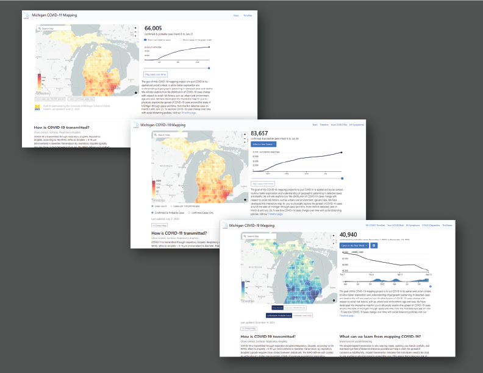
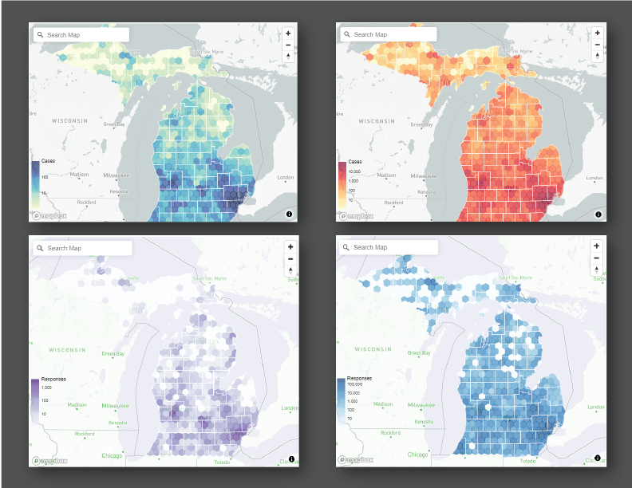
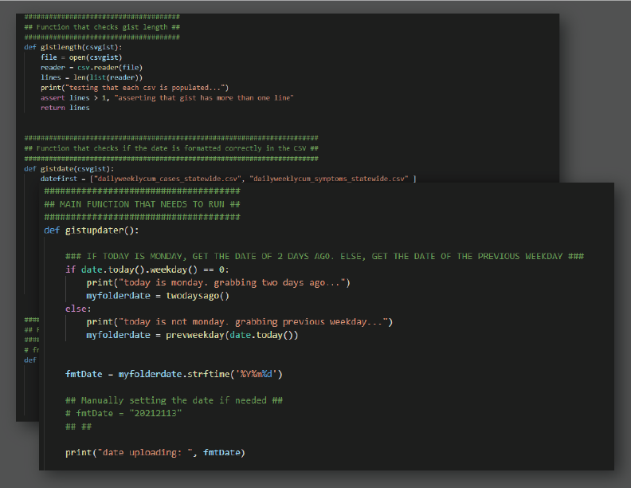

About COVIDMAPPING:
COVIDMAPPING is a tool that compiles COVID-19 case data in Michigan and places the data within a spatial context. It uses maps, timelines, and data from different sources to inform users about COVID in Michigan. COVIDMAPPING also uses scrollytelling to illustrate how one's risk for getting COVID could depend on the geography of their surroundings.
For more information, please check out the Epibayes lab site (which I also built and maintain) to learn more about our team, our publications, and more.
What I did:
Website Design (HTML/CSS/JS)
-
Redesigned website, centering clean and simple design and straightforward layout.
- I used Bootstrap as base for design due to its extensive documentation and relative ease of access. New designers will be able to more easily contribute their designs to the website. I like to use clean and simple designs a lot, especially in academia and public-facing work where clarity and simplicity help reach the most people.

-
Incorporated different data visualizations through use of visual design infographics, d3 data visualization modules, and color palettes.
- My lab coworkers who come from backgrounds in public health and epidemiology came up with the language and visual blueprint and I would turn this into web design. I made web-specific changes such as through the incorporation of d3 libraries for the data visualizations wherever I could and I had the data to. I worked with preexisting d3 code that my lab coworker created to update it or apply it to a new module. As a result of "converting" flat designs into web design and data visualizations, the data are more perceivable and accessible on the website.
- We stayed away from red-to-blue and red-to-green color palettes due to the possibility of users reading a different meaning into those specific colors and to help colorblind users distinguish between the colors. Instead, we used a blue-to-green palette, a red-to-yellow palette, a blue-shades palette, and a purple-shades palette to convey case density.

Data Upkeep (Python)
-
Made weekly/biweekly updates by uploading compiled data to gists. Semi-automated upload process for convenience.
- Data is compiled by my lab coworker and uploaded to a shared drive as a CSV file. I created a Python script that checks for the most recent folder of data and uploads those CSVs to Github gist, which then will update the data on the website. The Python script also checks for empty files (sometimes the data will not compile correctly) and checks that dates are formatted correctly. A process that would take fifteen minutes without the script now takes one console line to execute and complete!
